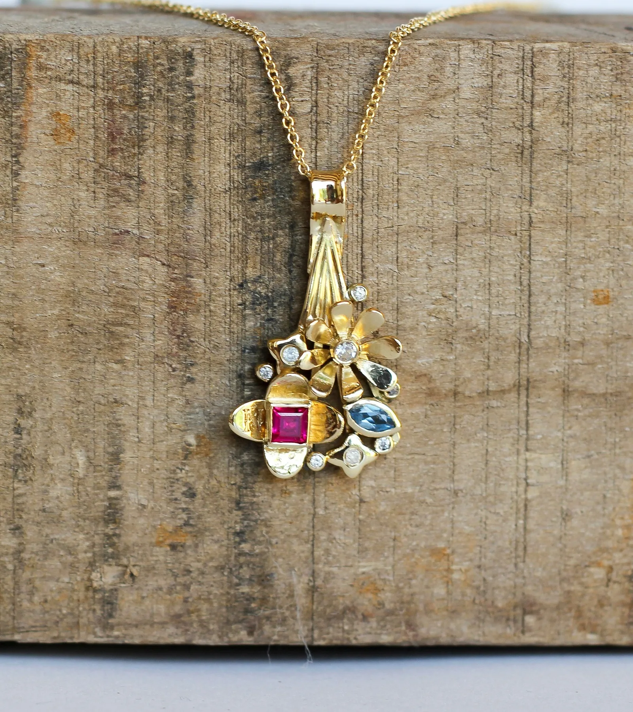

Uit het atelier
Vijf ringen, vijf verhalen, één nieuw juweel.
Heidi vroeg me om vijf ringen om te vormen tot één hanger. Een familiestuk waarin alle vrouwen uit de familie samenkomen.
Uit elke ring haalde ik een stukje: alle edelstenen, twee kleine bloemetjes en een stukje structuur. Het overige goud smolt ik om. Daarna begon het puzzelen, tot alles samenkwam in één bloemenboeket.
En ja, valt het op dat ik best wel trots ben op dit stukje?


